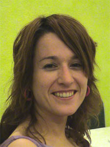

María de Castro Dávila
María de Castro Dávila 

This page is within a frameset. View the entire genealogy report of de Castro Dávila families, or surname index of de Castro Dávila pedigrees or report summary of de Castro Dávila heritage from "Árbol Genealógico de Manolo y Amalia".
Genealogy Tree.
© 2006 GenoPro Inc. All Rights Reserved.